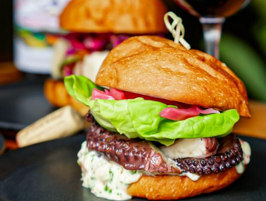

Octopus Burger With Chimichurri Aioli and Pickled Red Onions

This octopus burger has been Seattles burger for almost a
decade and has been a very popular food to enjoy. The main
reason people loved this burger, is it's special guest the
octopus and the tenticles are chewy and tender. As Fleming
said “It’s one of the things my wife and I talk about where,
whenever we go out to eat, we order it every time,” because
it's so delicious - 2012, Additionally, Fleming stated that
"because of COVID-19, sourcing local octopus has been difficult,
so they’ve been sourcing a sustainable, trap-caught octopus
from Spain." Overall, this burger is an excellent choice as
being part of your breakfast, lunch and/or dinner.
Ingredients:
Red Onions:
- 2 Cups White Vinegar
- 1 Cup Water
- 1 Cup Sugar
- 1 Medium-Size Red Beet Diced Roughly in 1" Pieces
- 2 Red Onions, Thinly Sliced
Octopus:
- 1 Each Octopus 2-4 Pounds
- 2 Head Garlic
- 1 Bunch Scallion
- 1 Nub Ginger
- 1 Each Yellow Onion
- 1 C Red Wine
- 2 C Soy Sauce
Chimichurri Aioli:
- 2 Cups Mayo
- 1/2 Bunch Cilantro, Chopped
- 1/2 Bunch Parsley, Chopped
- 1 Shallot Minced
- 5 Cloves Garlic Minced
- 1 Fresno Minced (If Desired)
- 2 TableSpoon Fish Sauce
- 2 TableSpoon White Vinegar
- 1 Lemon Squeezed
- 1 TableSpoon Salt
- 1/2 TableSpoon Sugar
The Preparation Instructions:
For the Pickled Red Onions:
Combine all liquids with sugar and beats, bring to a boil. Pour hot over sliced onions in a heat-proof container. Cover & cool in the fridge for at least 6 hours.
For the Octopus:
WARNING!!!!!!
The Following Instructions Must BE Followed Concisely and Accurately, or else May Not Comeout as Shown
- Clean octopus under cold running water making sure to get all tentacles and suction cups.
- Bring a pot of water to a boil, add Octopus to cook/blanch for 2-3 mins.
- Discard head & trim. In a new pot add water (enough to cover octopus) aromatics, red wine, and soy. Add in tentacle legs, cover, and bring to boil.
- Once removed from blanching liquid cut tentacles away from the rest of the octopus.
- Once at a boil bring the heat down to a low simmer for 3 to 3.5 hours until desired tenderness.
- Once tentacles are braised, remove them from stock and let cool on a separate pan the refrigerator.
- After cooled, cut tentacles separately and grill at high heat to order for 2-4 mins char and serve on the bun of your choice with the pickled onions and chimichurri aioli.
For the Chimichurri Aioli:
Mix all ingredients and refrigerate until ready to use.
Lastly:
Put the Picked Red Onions, the Octopus and the Chimichurri Aioli together into a hamburger bun haowever you like and serve.